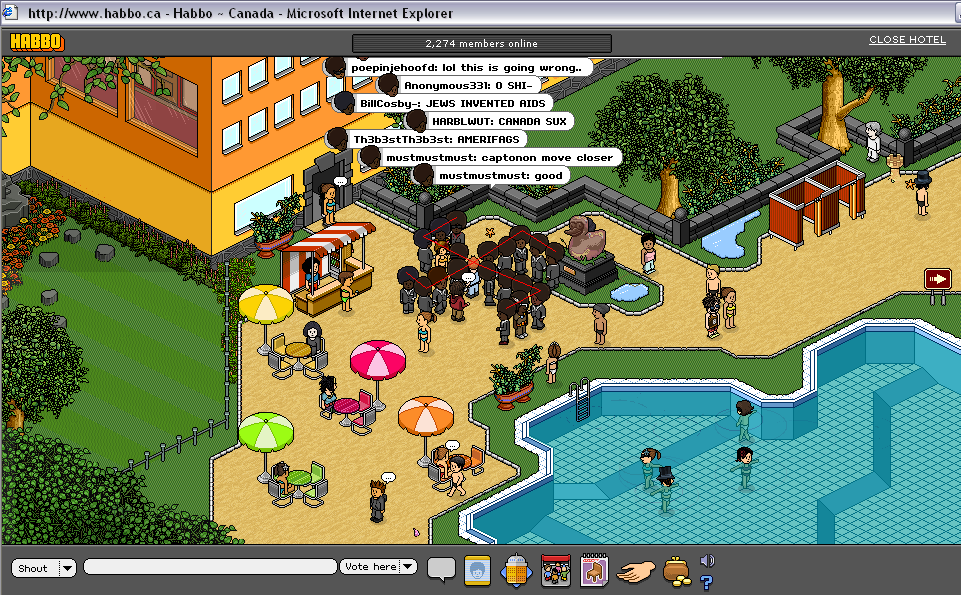
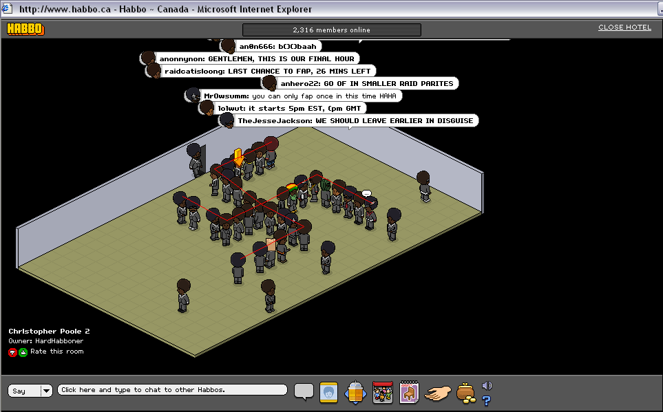
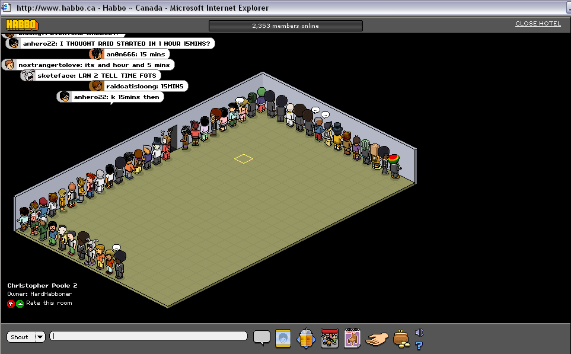
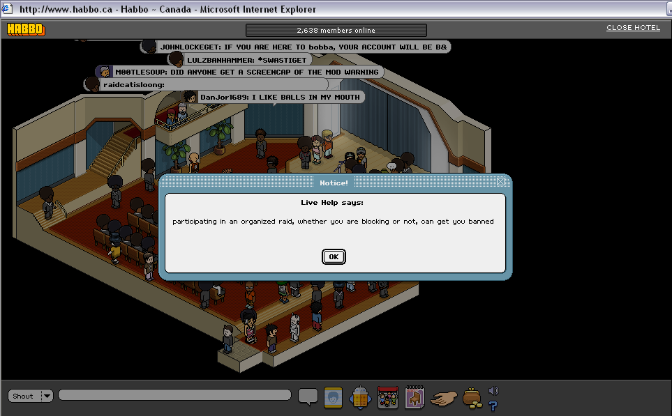

The Internet is Serious Business!
Home > Computers, Technology, and Internet > 4chan > The Great Habbo Raid of July 2008
Although I discovered 4chan and its tradition of raiding Habbo Hotel many months after the Great Habbo Raid of July 2007, when I first started reading the articles on these legendary raids (as well as other related articles, such as the one on Habbo Hotel and Habbo /B/lockade), I found the raiders' antics hilarious and wished that I could have been a part of the action. Fortunately for me, there was still plenty of time until the July 2008 raid. This was my first Habbo raid, and it was a lot of fun; I look back on these memories very fondly.
I can remember watching the rather well-known video for the big July 2007 raid, as well as the propaganda video for the then-upcoming July 2008 raid, as preparation. I even made the raid account (and probably a few extra accounts, but I cannot remember for sure) well ahead of time so there wouldn't be any issues for me during the day of the raid, which was set for 12 July 2008.
I was so enthusiastic for this that I even logged on to Canadian Habbo Hotel the day before to see if some raiders were already blocking the pools. It turns out that some folks probably couldn't wait, either, and there were enough of us to form a swastiGET, with Rick Astley lending a hand as the center:

As I didn't want to miss any action, I was on /b/ for maybe an hour or two before the official start time of the raid to see if there was anything I could do to help. The general agreement was for everybody to log in to Habbo Canada with their raid accounts, and to first join a handful of private rooms that had already been created and that were named after some variation of the name Christopher Poole (as moot had revealed his powerword a few days prior, so it was the talk of the board then); from there, we could communicate more efficiently. The room I joined was pretty active, and soon we formed a swastiGET for practice:

Then somebody suggested that everybody disguise
themselves, meaning that we change our avatar's appearance into anything besides a black man with an afro wearing a suit. Once disguised, we could quietly enter the pool room without raising suspicion, and then suddenly reveal ourselves at the official start time of the raid by all changing back to the standard raider's appearance. Our room, at least, ended up doing this, and we also (for some reason) decided to all line up by the wall. (Some /b/rothers decided to disguise as certain people or characters: in the image below, can you find Pedobear, Billy Mays, Epic Fail Guy, and Josef Fritzl? By the way, I can still remember my disguise, which was the guy wearing the green cap, purple top, and red pants standing at the corner to the right of the door—that's me!)

I have almost no pictures of the raid itself, as once the raid started for real, I was probably too excited over what I was experiencing and participating in to remember to take screenshots; that same reason is also why I did not record any video, either. The pool, however, was definitely closed, and even access to the entire pool room itself was blocked due to some /b/rothers who formed a human wall at the room's entrance. We spread to other rooms, too, including that theater room, where some mod tried to scare us:

This picture has been on my hard drive now for more than 12 years, and yet that DanJor1689 fellow's declaration of his homosexuality still makes me laugh, even today:
I probably participated for a total of a few hours, during the peak hours of activity. Apparently, people continued to raid for the rest of the day, and even into the next day, but I cannot remember if I joined again after peak hours on 12 July. A lot of shouting and dancing was done, the pools were closed, many Habbos were saved from the AIDS, swastiGETS were formed, and much lulz was had. The post-raid consensus at the time seemed to be that, although this one didn't match the big July 2006 or July 2007 raids in terms of size, it was still a success. (I doubt that any future raids could ever match the success of the big July 2006 and July 2007 ones; those two will forever go down in history as the greatest ever.)
It was a day well spent for me, and one which I will always cherish.
See also the Encyclopedia Dramatica article on this event.


 All written materials on this Web site are my own, and all are released under the Do What the Fuck You Want to Public License Version 2.
All written materials on this Web site are my own, and all are released under the Do What the Fuck You Want to Public License Version 2.
This page last modified on 26 March 2021.